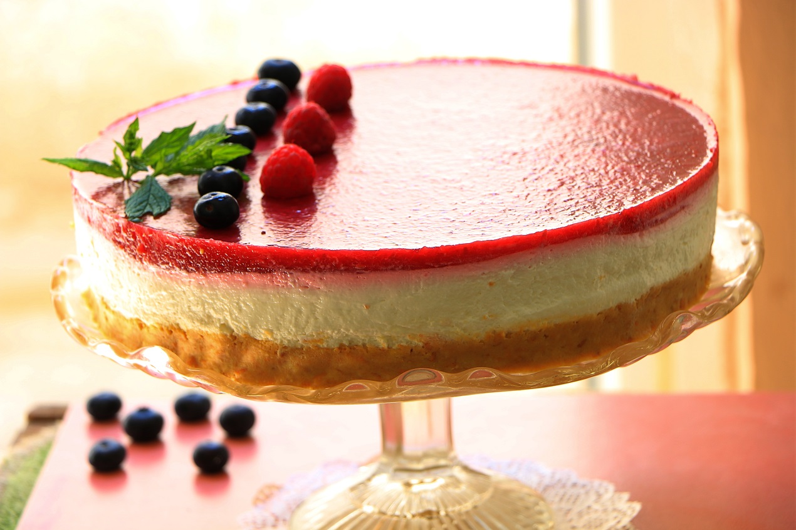

My Favorite Recipes
-
You Must try! 40 min
Three-Milk cake
Trileçe, sometimes known as tres leches cake or Three-Milk cake, is a cake from the Balkans. It is a delicate soft sponge that is drenched in a combination of three milks. Generally, it is covered with caramel.
-
30 min
Pancakes
They are called palačinka (plural: palačinke). These pancakes are thin and filled with apricot, plum, lingonberry, apple or strawberry jam, chocolate sauce, or hazelnut spread. Eurokrem, Nutella, and Lino-Lada fillings.
-
160 min
Cheesecake
Cheesecake is a sweet dessert consisting of one or more layers. The main, and thickest, layer consists of a mixture of a soft, fresh cheese eggs, and sugar. If there is a bottom layer, it most often consists of a crust or base made from crushed cookies.